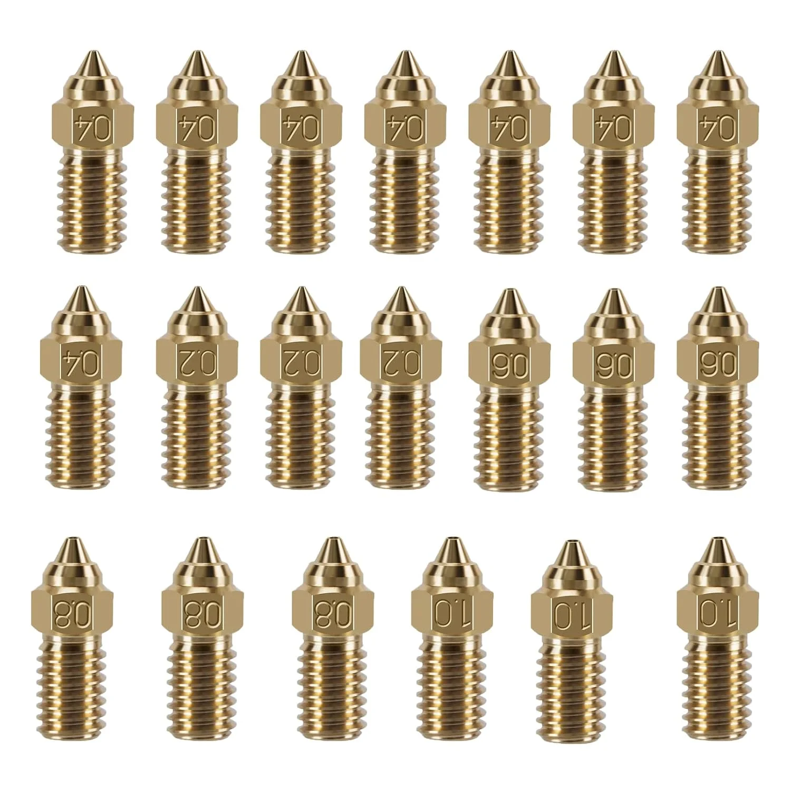
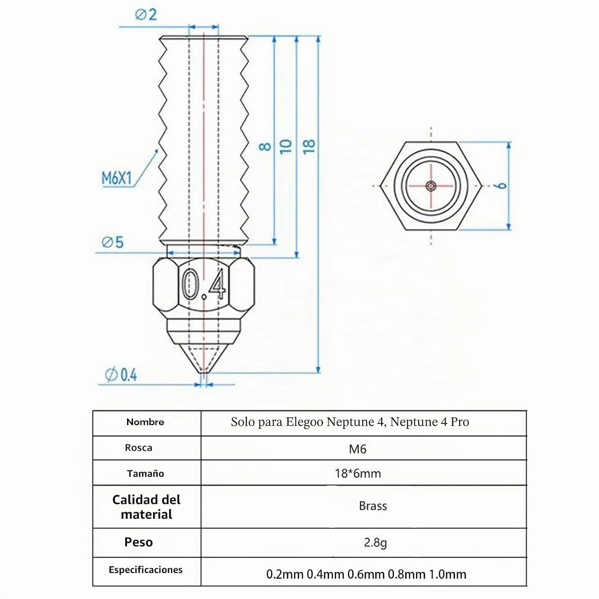
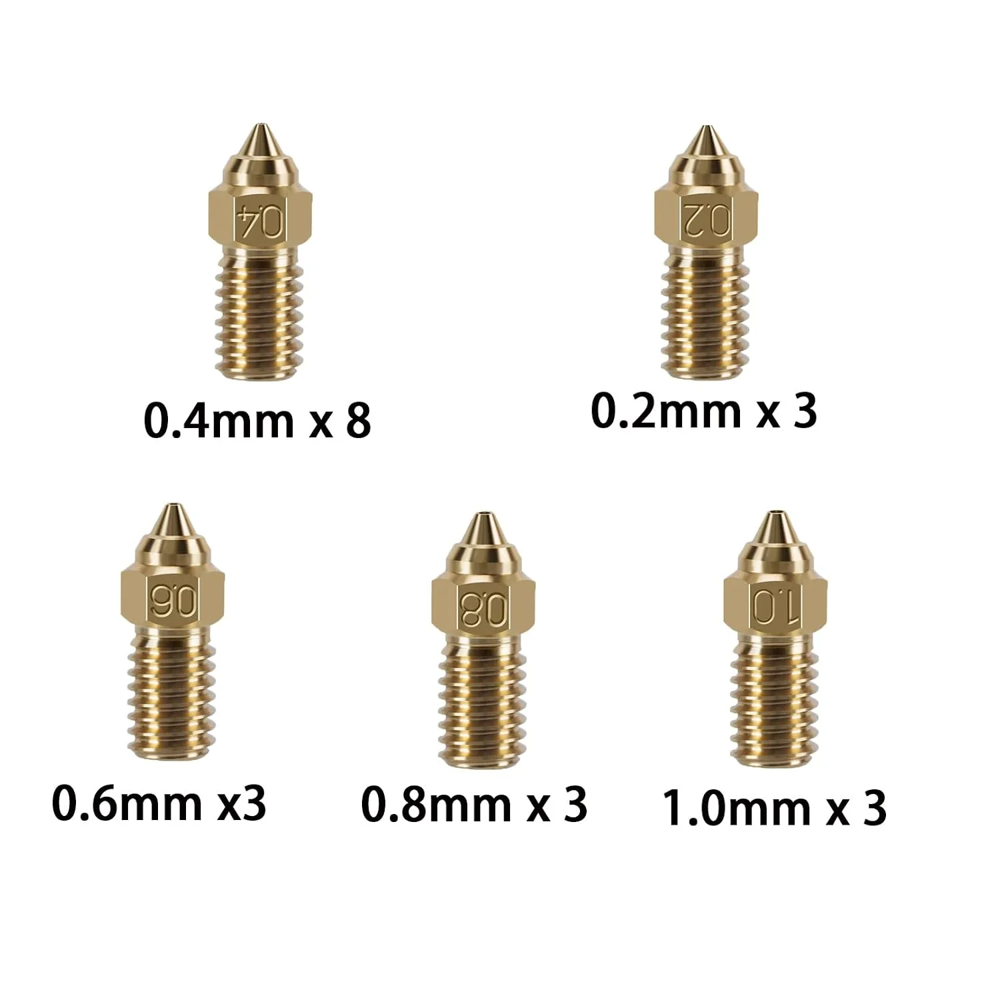
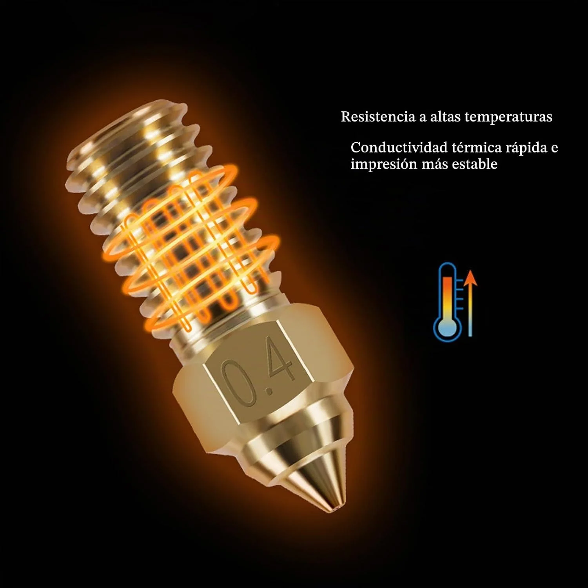
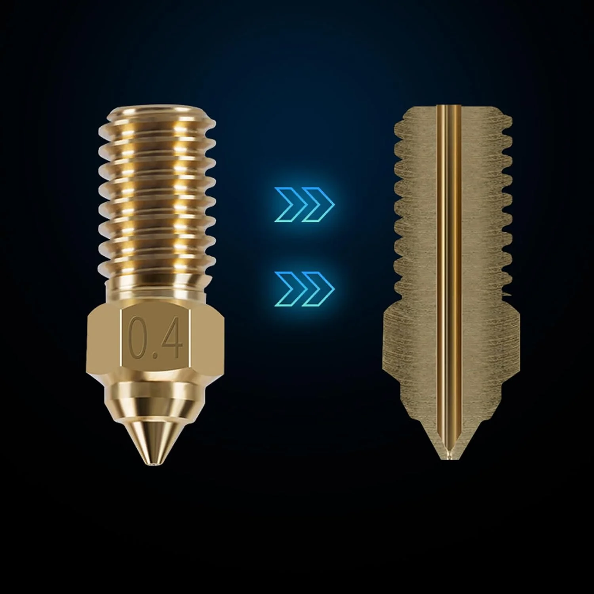
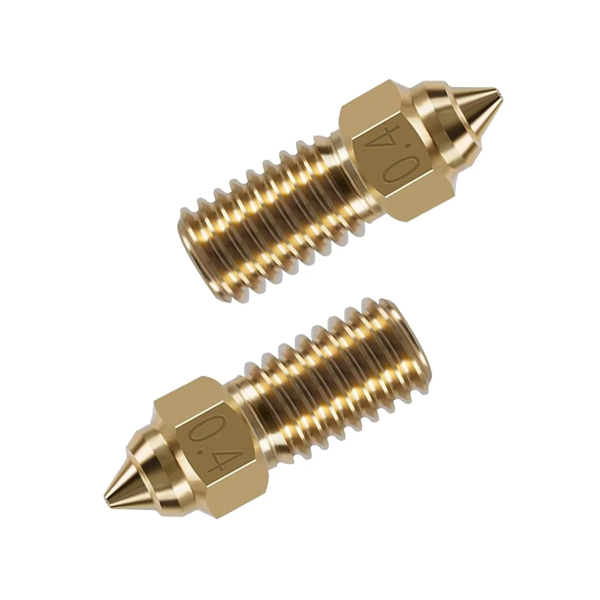

KOYOFEI
KOYOFEI Kit 20 Boquillas Latón para Neptune 4 (Multi-tamaño)
Valoración del editor
Puntuaciones editoriales de 0 a 10, comparables entre productos del mismo tipo. No son una puntuación oficial de Amazon.
Ficha técnica
General
| Tipo de accesorio | Boquillas |
|---|---|
| Compatibilidad | ELEGOO Neptune 4 y Neptune 4 Pro (según el fabricante) — compatible con el ELEGOO Neptune 4 de este catálogo |
| Material | Latón |
| Cantidad | 20 boquillas: 8 de 0,4mm y 3 de cada uno de 0,2mm, 0,6mm, 0,8mm y 1,0mm |
Otros datos
| Diámetros incluidos | 0,2mm (3 uds), 0,4mm (8 uds), 0,6mm (3 uds), 0,8mm (3 uds), 1,0mm (3 uds) |
|---|---|
| Tipo de producto (según Amazon) | Componentes mecánicos |
| Otras variantes en la misma ficha | Neptune 4 Plus (27,32€), Neptune 4 Plus Multi (22,06€), Neptune 4 Plus Brass (9,99€), Neptune 4 Brass (9,99€), Neptune 4 Hardened (29,99€) — conviene elegir la variante que coincide con tu modelo exacto |
A diferencia del kit de boquillas MK8 de 0,2mm que ya tienes en el catálogo (universal, para la rosca MK8 estándar de Ender/CR-10/Prusa), este kit de KOYOFEI está diseñado específicamente para el ELEGOO Neptune 4 y Neptune 4 Pro — el mismo modelo que ya tienes publicado. Trae 20 boquillas repartidas en 5 diámetros (0,2 a 1,0mm), lo que permite adaptar la impresora al tipo de pieza: boquillas finas (0,2-0,4mm) para detalle, y más gruesas (0,6-1,0mm) para piezas grandes donde interesa más velocidad que definición.
Con solo 17 valoraciones, es la muestra más pequeña de todo el catálogo — la nota (4,4/5) es buena, pero conviene tenerlo en cuenta antes de fiarse del todo. Como con cualquier cambio de boquilla, hay que volver a calibrar la distancia a la cama después de cada cambio.
- Diseñado específicamente para el ELEGOO Neptune 4 de este catálogo, no es un kit genérico
- 5 diámetros distintos (0,2 a 1,0mm) para adaptar la impresora al tipo de pieza
- 20 unidades por 19,99€, buen precio por boquilla si de verdad usas varios diámetros
- Solo 17 reseñas — la muestra más pequeña de todo el catálogo, conviene tenerlo en cuenta
- Solo compatible con la familia Neptune 4, no sirve para otras impresoras del catálogo
- Hay que recalibrar la distancia boquilla-cama tras cada cambio, como con cualquier boquilla nueva
Ideal para: Quien ya tiene un ELEGOO Neptune 4 (como el de este catálogo) y quiere experimentar con distintos diámetros de boquilla según el tipo de pieza que imprima.
Qué dicen los compradores
4,4 sobre 5 con solo 17 valoraciones — la muestra más pequeña de todo el catálogo. No disponemos del texto de las reseñas individuales, solo la valoración agregada de Amazon.
Reseñas mostradas en Amazon en el momento de la captura.
Como Afiliados de Amazon, obtenemos ingresos por las compras que cumplen los requisitos aplicables. «Amazon» y el logo de Amazon son marcas de Amazon.com, Inc. o sus filiales.